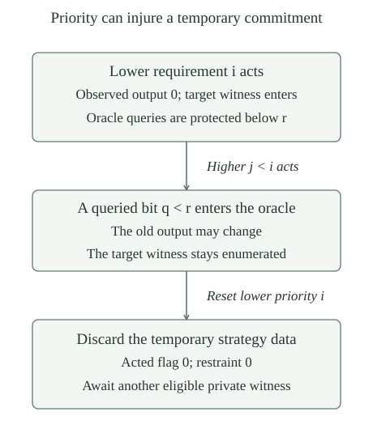

For sets \(A,B\subseteq\mathbb N\), use the fixed oracle program numbering. The priority requirements are
Equality means equality of partial functions, with each characteristic function total. Divergence or any incorrect numerical output at one input suffices for disagreement. Satisfying every even requirement proves \(A\not\le_T B\); satisfying every odd one proves \(B\not\le_T A\). Smaller requirement indices have higher priority.
At finite stages write \(T_{i,s}=A_s\) and \(O_{i,s}=B_s\) for even \(i\), and exchange the sets for odd \(i\). These are the target and oracle of requirement \(i\). Dropping the stage subscript means the corresponding final set. Put \(e_i=\lfloor i/2\rfloor\). The construction changes target membership to defeat \(\varphi_{e_i}^{O_i}\).
The sets \(N_i=\{\langle i,n\rangle:n\in\mathbb N\}\) are infinite and pairwise disjoint. Membership in \(N_i\) is primitive recursive jointly in \(i,x\). Only requirement \(i\) will be permitted to enumerate members of \(N_i\).
The pairing bijection gives \(x\in N_i\) exactly when the first coordinate of the decoded pair is \(i\). This is a primitive-recursive test. The map \(n\mapsto\langle i,n\rangle\) is injective, so its range is infinite; different first coordinates give disjoint ranges. In particular, each reservoir contains a number above any prescribed bound and outside any prescribed finite set.
A stage state at stage \(s\) consists of four lists \((a_s,b_s,d_s,r_s)\), each of length \(s\). The first three have entries zero or one; the last has natural-number entries. Read an entry outside a list as zero. Define
The acted flag \(d_s(i)=1\) means that requirement \(i\) has acted since its latest reset. Its restraint \(r_s(i)\) asks every lower-priority requirement to enumerate only numbers at least \(r_s(i)\). The restraint will protect the oracle of that requirement; applying the numerical restriction to additions to either set is harmlessly stronger. Flags and restraints are temporary. Membership bits, once one, are never returned to zero.
Initially all four lists are empty. Encode lists by the established numerical list coding and pack their four codes with pairing. Thus a state is one natural number, rather than an oracle containing the eventual sets.
Let \(u_S\) code the membership list of a finite set \(S\). Use the fixed ordinary checker \(V(u,k,e,x)\). If
then \(\varphi_e^S(x)\downarrow=0\). The same bounded value, and hence the same actual output, holds for every oracle agreeing with \(S\) below \(k\).
The numerical checker encodes failure by zero and a successful output \(y\) by \(y+1\), so value one means an actual output zero. Its query-agreement theorem says that allowance \(k\) only asks questions below \(k\). Equal answers there preserve the whole bounded calculation, and bounded soundness gives the actual output. In particular, at stage \(s\) allowance \(s+1\) is protected by restraint \(s+1\), including a possible query at position \(s\).
A pair \((i,x)\) is eligible at stage \(s\) when all of the following hold:
Here \(u_{O_{i,s}}\) is \(b_s\)'s list code for even \(i\), or \(a_s\)'s code for odd \(i\). All these tests terminate using finite numerical data. The witness is fresh in its target, belongs to its private reservoir, respects every higher restraint, and currently receives the answer zero from the proposed oracle decider.
If any pair is eligible, choose the least eligible \(i\), then its least eligible \(x\). Call this requirement the one receiving attention at the stage. No question whether an unbounded computation will eventually halt is asked.
The successor-stage operation first appends zero to each of the four lists, making their lengths \(s+1\). If there is no eligible pair, these lists are the next state. Otherwise let \((i,x)\) be the selected pair. Set the target membership bit at \(x\) to one, leaving the other membership bits unchanged. For all \(j\le s\), put
This is a reset of every lower-priority strategy. It discards their action flags and restraints, but removes no member from either set. The acting strategy records that it has acted and protects every query of its observed computation. The next fresh witness, if a reset strategy later acts again, must still lie outside its current target set. Distinct reservoirs keep it separate from every other strategy's additions.
The specified successor operation and the resulting map from \(s\) to the coded state at stage \(s\) are primitive recursive. The membership tests for \(A_s\) and \(B_s\) are primitive recursive jointly in stage and input.
For a supplied state and stage, scan \(i=0,\ldots,s\). For each \(i\), scan \(x=0,\ldots,s\), checking the bounded list of restraints \(j<i\). The reservoir test, list entries, arithmetic, flags, and the fixed finite checker are primitive recursive. Keep the first successful witness and then the first successful priority; equivalently apply the bounded least-search construction first to witnesses and then to priorities, using the bound itself for failure. This implements precisely the stated choices.
Copying, extending, and updating a list are bounded loops on coded finite data. Form each new list by a loop over \(j=0,\ldots,s\), using the displayed cases, and pack its four codes. These are composition and primitive recursion, so the successor operation is primitive recursive in both supplied numbers. Primitive recursion from the empty initial state computes the stage sequence. Composing with bounded entry lookup gives its membership tests. The ordinary model-equivalence and numbering results therefore provide actual finite programs for these maps. The eventual sets are not inputs to any of these programs.
For every \(s\), the four lists have length \(s\), their membership and flag entries are binary, and \(A_s,B_s\subseteq\{0,\ldots,s-1\}\). Both set sequences increase. Each transition adds at most one number to one set. An addition at a stage where requirement \(i\) acts lies in \(N_i\), and no requirement other than \(i\) ever adds a member of \(N_i\).
Each restraint is at most \(s\). A zero acted flag has restraint zero. A flag \(d_s(i)=1\) records an action of \(i\) at some \(t<s\) with no intervening higher-priority action; its restraint is \(t+1\).
Induct on \(s\). Empty lists give the base case. Appending zero preserves old entries and lengthens each list by one; setting one target bit cannot destroy binary values or membership. The selected witness is at most \(s\), so the new sets are bounded by \(s+1\). The eligibility conditions place it in \(N_i\), and disjointness of reservoirs excludes every other owner. No other instruction changes a membership bit.
For strategy data, a higher-priority coordinate is preserved, the acting coordinate receives flag one and restraint \(s+1\), and a lower coordinate receives two zeros. These three cases preserve the asserted bounds and give exactly the stated provenance of a nonzero flag. A stage with no attention only appends zero. This proves all the invariants.
Define \(A=\bigcup_s A_s\) and \(B=\bigcup_s B_s\). Both sets are c.e.; their finite stages are increasing, and for every finite bound \(k\) there is a stage after which both finite stages agree with their unions below \(k\).
On input \(x\), compute successive states until its target membership bit becomes one. gives an ordinary program for each finite test, so the search recognizes exactly the union. The equivalence with an ordinary domain index also follows from the computable increasing approximation theorem, using the bound \(s\). Thus these are actual c.e. sets.
For each member below \(k\), choose a stage at which it enters; a nonmember never enters. A common stage for the finitely many members below \(k\) works thereafter by monotonicity. Do this for both sets and take the larger stage. This is an existence statement about finitely many bits, not an algorithm computing a stabilization stage.
A computation queries the bit \(q\) of an oracle, receives zero, and returns that answer. A strategy puts its witness \(x\) into its target set, making the target bit one. If a higher strategy later puts \(q\) into the oracle, is the old disagreement necessarily preserved?
No. The same query program now returns one, equal to the target bit. Its earlier output zero supplied no information about an oracle differing at the queried position. Restraint \(r>q\) prevents this change by a lower-priority strategy, since that strategy may only add numbers at least \(r\). A higher strategy is allowed to ignore the restraint; its action resets the lower strategy. This explains both why a reset is needed and why mere convergence of finite oracles does not preserve an arbitrarily selected earlier run.

For every \(i\), there is a stage \(v\) such that no \(j\le i\) receives attention at any stage \(s\ge v\). In particular every strategy is reset only finitely often, and its flag and restraint eventually stop changing.
Induct on \(i\). Requirement zero is never reset. Once it acts, its flag is one forever and blocks another action, so it acts at most once.
For the induction step, choose \(v\) after every action of indices \(j<i\); the induction hypothesis supplies such a stage. After \(v\), no instruction resets the flag of \(i\). If the flag is already one, it never acts again. Otherwise it can act at most once: that action sets its flag to one, and lower actions preserve it. Thus there is a later stage after every action of \(i\) too. This proves the induction. Only higher actions reset a given strategy; after all those actions and its possible last own action, its flag and restraint are fixed.
The complement-marker stabilization lemma gives another finite stabilization argument: finitely many events at each bounded family of ranks eventually leave that entire marker prefix fixed.
Suppose requirement \(i\) acts at stage \(s\), and no requirement \(j<i\) acts at any stage \(t>s\). Its restraint then remains \(s+1\), and its oracle set at every later stage, and in the union, agrees with \(O_{i,s}\) below \(s+1\).
The action changes only its target, leaving its oracle unchanged. It sets its flag to one, so it cannot act again unless reset; the hypothesis excludes such a reset. Every subsequent action has index \(j>i\). Its eligibility test requires its new number to be at least the unchanged restraint \(s+1\). Hence it changes no oracle bit below that bound. Induction on subsequent stages gives agreement at every finite stage; the increasing union has the same bits there. The bounded observation is therefore preserved for the final oracle.
If requirement \(i\) acts at stage \(s\) and is never reset later, then \(R_i\) holds for the final sets.
Its selected witness \(x\) was outside its target, and its bounded computation with the stage oracle returned zero. The action puts \(x\) into the target forever, so its final characteristic bit is one. By and , the actual final-oracle computation still returns zero. The two functions therefore disagree at \(x\), as required.
Fix \(i\). Suppose \(d_v(i)=0\), and at every stage \(s\ge v\) neither \(i\) nor any \(j<i\) acts. Then \(R_i\) holds.
All higher restraints are now fixed. Choose \(x\in N_i\) outside the finite target \(T_{i,v}\), above every higher restraint. Such an \(x\) exists by . Only \(i\) can add this private number, and \(i\) never acts after \(v\), so \(x\) stays out of its final target. Its final target bit is zero.
Suppose the final-oracle computation at \(x\) returned zero. Bounded completeness supplies a fixed allowance \(k\) giving encoded value one for that oracle. By , at every sufficiently late stage its finite oracle agrees with the final oracle below \(k\). Query agreement replays this successful calculation at allowance \(k\). Increasing the allowance to \(s+1\) then preserves success for the same finite oracle. Choose such a stage \(s\ge v,i,x\) with \(s+1\ge k\). All eligibility conditions for \((i,x)\) now hold.
The stage must select some eligible requirement of index at most \(i\). A smaller selected index contradicts the absence of higher actions after \(v\); selecting \(i\) contradicts the assumed permanent wait. Thus the final computation does not return zero. It either diverges or returns a positive value, including a nonbinary one. In either case it disagrees with the final target bit zero, proving the requirement.
The specified effective construction gives c.e. sets \(A,B\subseteq\mathbb N\) satisfying \(A\not\le_T B\) and \(B\not\le_T A\).
The two sets are c.e. by . Fix \(i\) and go beyond all higher-priority actions, using . If its flag is one, it records an earlier action not followed by a reset, so applies. If its flag is zero and it later acts, that action is never reset and the same lemma applies. If it never acts thereafter, applies. Thus every requirement is satisfied. The even and odd requirements exclude every proposed reduction in the two respective directions, proving the theorem.
For these same c.e. sets,
In particular there is an undecidable c.e. set which does not decide the halting problem. This solves Post’s problem.
Every ordinary c.e. set reduces to the ordinary halting set, hence to \(0'=J(\varnothing)\), by jump completeness at the empty oracle. This gives both upper comparisons. If one set were computable it would reduce to the other, contradicting incomparability. If \(0'\le_T A\), then \(B\le_T0'\le_T A\), again a contradiction; exchange the sets for the other strict upper bound. This is the same degree-order argument as in , now with actual ordinary enumerations of the constructed sets.
For a prescribed noncomputable c.e. input, Friedberg splitting gives two noncomputable c.e. pieces whose disjoint union is that input.
Can either constructed set many-one reduce to the other? Can either be many-one complete among c.e. sets?
No in both cases. Every many-one reduction gives a Turing reduction, so a reduction in either direction would contradict incomparability. If either set were many-one complete for c.e. sets, the halting set would many-one reduce to it, hence Turing reduce to it. That contradicts the strict upper bound just proved. The earlier simple-set construction ruled out many-one completeness without proving Turing incompleteness; here the Turing-degree conclusion supplies the stronger result.